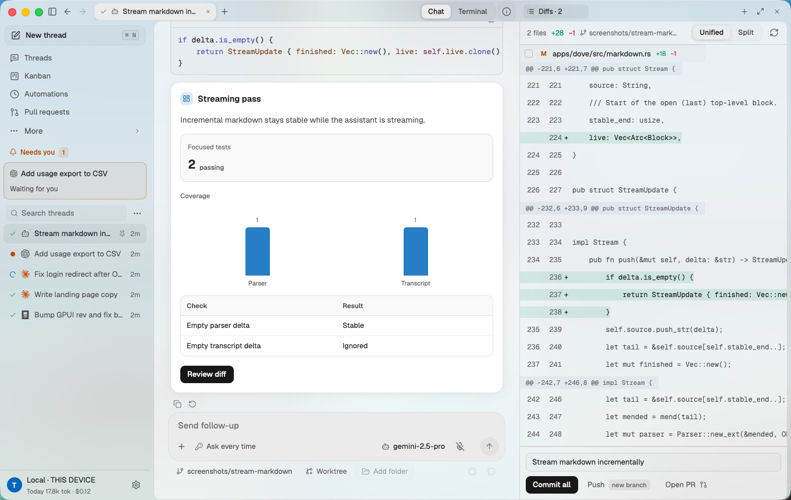
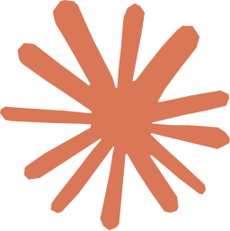
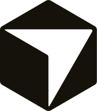
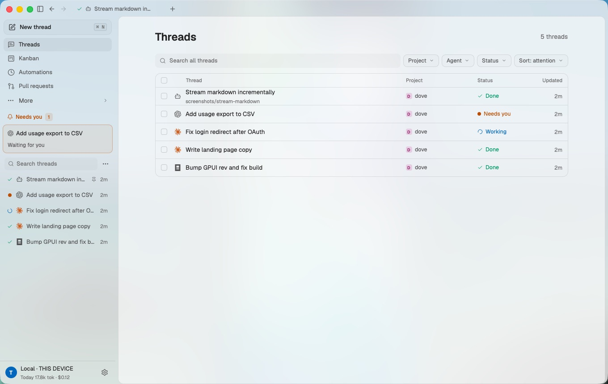
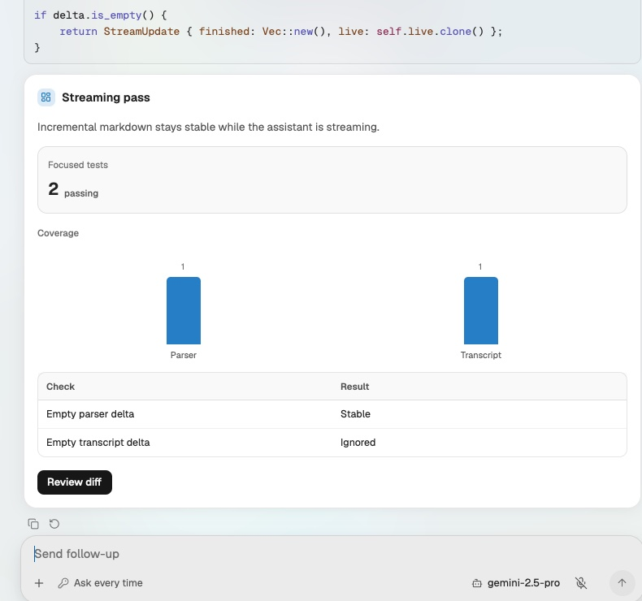
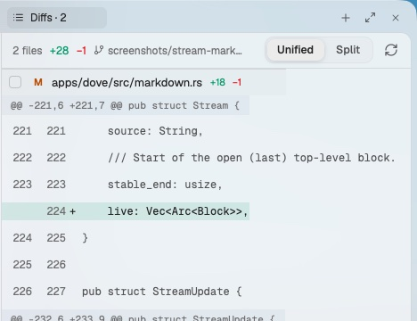
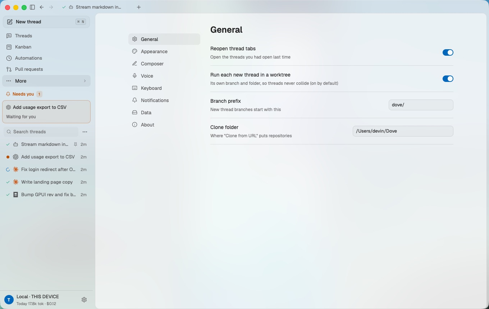

Worktrees by default
Every task can run on its own branch in its own git worktree, so two agents edit the same repo without colliding. Merge, push or open a PR from the thread.
Open source · Native Rust · Local-first
Dove runs every coding agent you use in one native window. Each task gets its own worktree, a live transcript, a diff to review and a browser the agent can drive. Your phone becomes the remote.
Free with your own keys and subscriptions. macOS, Windows and Linux.


Claude Code
CursorPlus goose, Factory Droid, Amp, Kilo, Cline, Hermes and Kimi through the Agent Client Protocol. Dove launches the CLIs you have installed and signs in with the accounts they already use.
Dove is the workspace around the agent, not another agent. Chat, terminal, diff, browser and files share one thread, whichever CLI is doing the work.
Features
Run Claude Code on one task and Codex on the next. Threads sort by what needs you: approvals first, then work in progress, then finished.

Markdown, tables, Mermaid, math and images render as they stream. Agents answer with interactive cards: stats, charts, checklists and choices. Your pick goes back as a normal message, so any harness can continue.

Diffs, git history, files, an in-app browser and a terminal stay attached to each thread. Commit, push or open a PR without leaving it.

Written in Rust on GPUI and idle at zero frames per second. Projects, transcripts, settings and usage live in SQLite under ~/.dove. Bring your own keys; there is no model bill from us.

And the rest of the toolbox
Every task can run on its own branch in its own git worktree, so two agents edit the same repo without colliding. Merge, push or open a PR from the thread.
Flip from the rich chat to the agent's own TUI on the same session, then flip back.
Every agent gets Dove's browser tools over MCP: navigate, snapshot, click, type, screenshot. Drive the in-app browser or your own Chrome through the extension.
Create, preview and edit PDF, PowerPoint, Excel and Word files in the side panel, then ask the agent to change the one you are looking at.
Connect Paper so agents read your canvases and turn designs into code, with the live result one tab away.
Give agents GitHub, Linear, Slack, Notion and hundreds more apps through Composio, using your own key.
Let an agent see and operate desktop apps through the open-source cua-driver, with every action visible and stoppable.
Tokens and cost per turn across every agent, exact when the harness reports it and marked as estimated when it does not.
iOS and Android
Turn on Settings › Remote control, sign in with Woozlit, then sign in on your phone with the same account. Watch transcripts live, answer approvals, steer a run or start a new one. The work still happens on your machine.
Pricing
The desktop app is free and open source with every agent and every local feature. Paid plans cover what costs us money to run: sync, devices and teams.
$0forever
Everything local, with your own keys.
Download$12per month
For one developer on many devices.
Join the waitlist$24per user / month
Shared threads for small teams.
Join the waitlistCustomannual
For security reviews and scale.
Contact usModel usage is never resold. Agents run on your own subscriptions and API keys on every plan.
Builds are published on GitHub Releases. Until the first signed release, build from source in one command.
git clone https://github.com/PupppyLoverr/Dove && cd Dove && cargo run -p dove
Neither. Dove is the development environment around the agents. It launches the CLIs you already use (Claude Code, Codex, Cursor, Gemini CLI and others), normalises their output into one event stream and gives each task a worktree, diff, browser and terminal.
No. Agents run on your own subscriptions and API keys. The desktop app is free and open source. Paid plans only cover hosted sync, extra devices and team features.
Nowhere new. Dove runs on your machine and stores data in ~/.dove. Agents talk to their own providers as they would in a terminal. Remote control relays session events, not your repository.
Dove does not ship its own model or bind you to one vendor. It runs many different agents side by side in isolated worktrees, in a native Rust app, and adds the shared pieces they lack: diff review, browser control, generative UI, office documents and a mobile remote.
Turn it on in Settings › Remote control and sign in with Woozlit. Then sign in on your phone with the same account. The desktop publishes each session as a Loro CRDT document to the Cosmos edge, which runs on Cloudflare Workers and Durable Objects. The phone shows the transcript live and sends commands back. The agent keeps running on your desktop. When remote control is off, nothing leaves the machine.
macOS, Windows and Linux for the desktop app. The in-app browser uses each OS's native web view: WKWebView, WebView2 and WebKitGTK. Mobile: iOS, with Android in progress. The macOS app is 91 MB.
Yes. Dove is Apache-2.0. Read CONTRIBUTING.md, pick an issue and open a pull request.